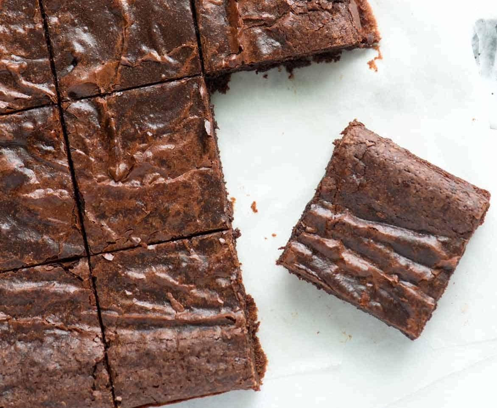

Return Home

This brownie recipe is super simple, super consistent, and is ready to eat within 35 minutes
- 8x8 inch baking pan
- parchment paper
- cake tester
- 145g unsalted butter
- 250g granulated sugar
- 80g cocoa powder
- 1/4 tsp kosher salt
- 1 tsp vanilla extract
- 2 large eggs
- 65g all-purpose flour
- Heat the oven to 165℃ and line the baking pan with parchment paper, buttering the exposed sides
- Melt together the butter, sugar, and cocoa powder in the microwave
- Once lukewarm whisk in the eggs, vanilla, and salt
- Fold in the flour, being careful not to overwork the batter at this point
- Pour into pan and bake for 20-25 minutes or until the cake tester comes out clean
- Let rest for 10 minutes before removing from the pan and serving